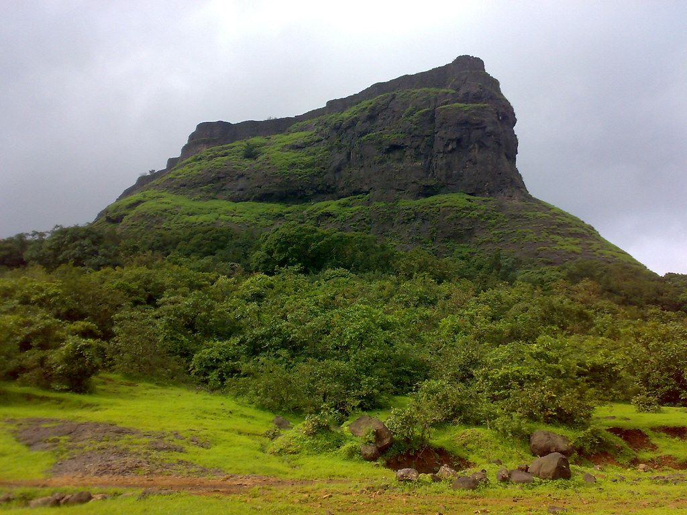
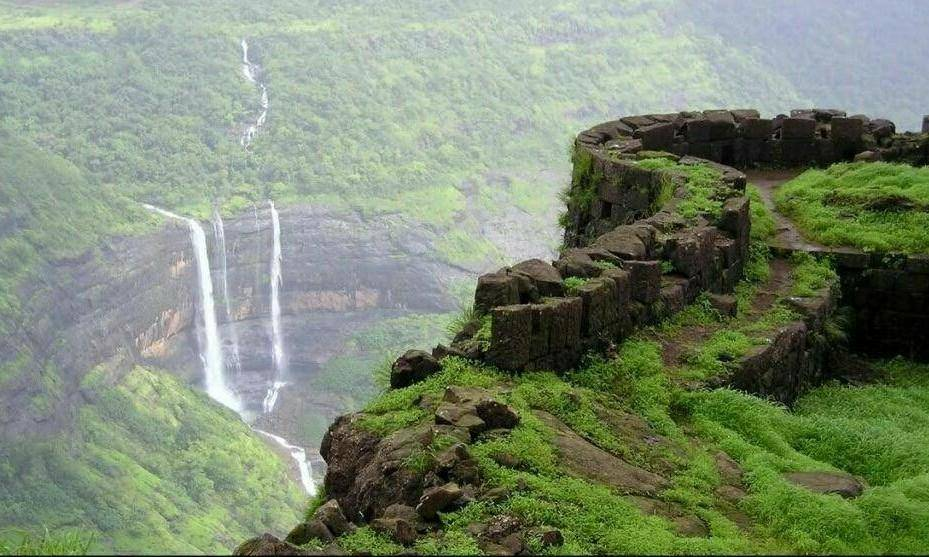
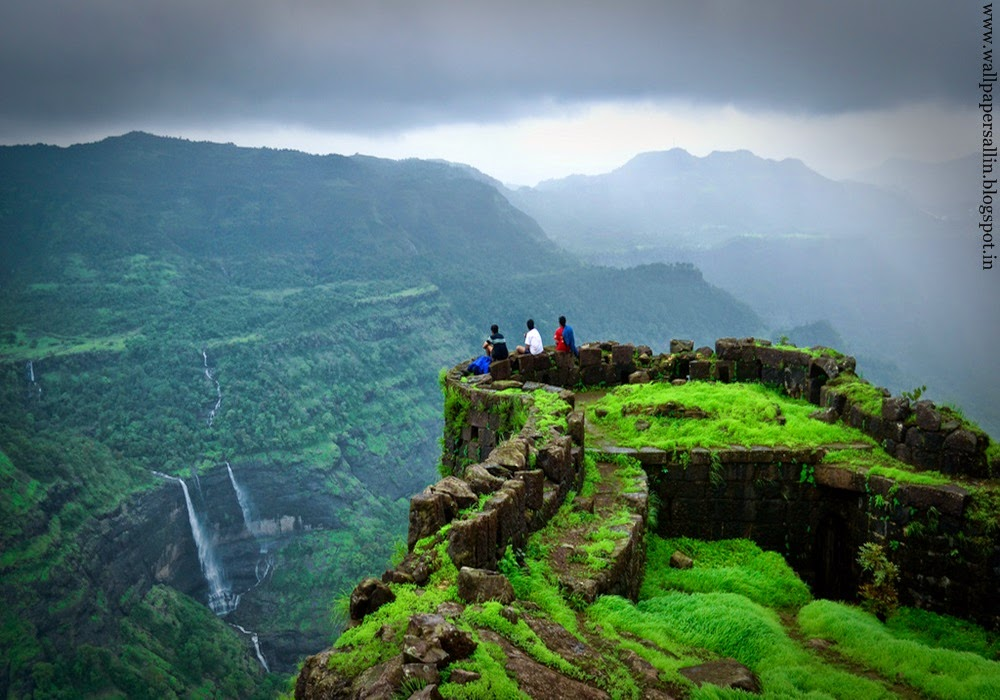
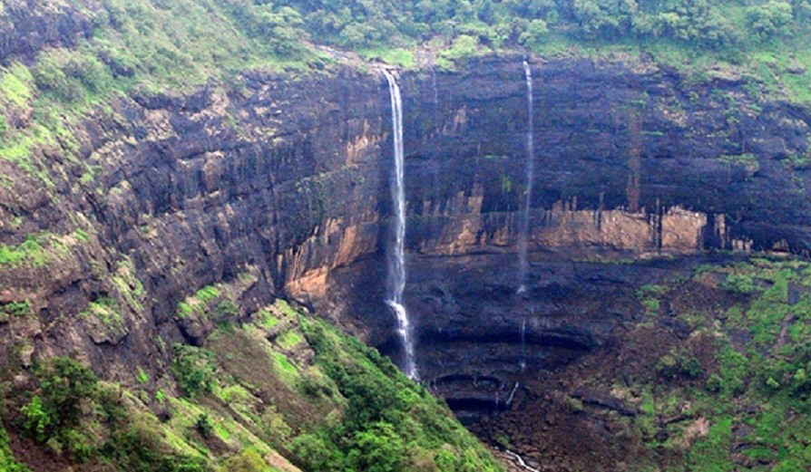

Rajmachi Fort




Rajmachi is a small village situated in the Sahyadri mountain range of the Konkan region of Maharashtra. Rajmachi is famous for the historical fortress which has two fortified peaks - Shrivardhan and Manaranjan forts, located near two famous hills of Lonavala and Khandala. At the base of the fort is the village Udhewadi which is another name for Rajmachi. Rajmachi has seen many change of hands from Shivaji Maharaj, Emperor Aurangzeb, Shahu Maharaj and eventually the British reign. The fort of Rajmachi is famous among trekkers and adventure enthusiasts. If you want to experience a full-fledged trek, you can start from the Kondhane caves side which will take 3-4 hours of climbing, but otherwise you can drive right upto Udhewadi village (from the Lonavala side) and then trek for hardly 20-30 minutes to the top of the fort. The simple and clearly marked trail on both the paths make Rajmachi a very popular beginner's trek.
How to reach
Nearby Places

Astro Agro Farm

Della Resorts